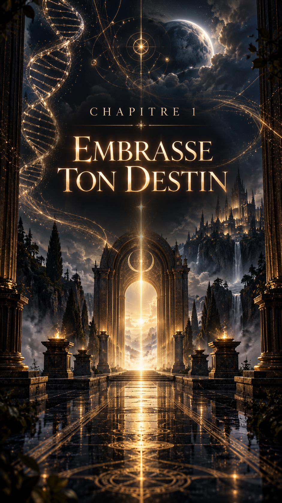
Betty Flores est une chercheuse généticienne mexicaine très réputée. D’une intelligence hors du commun, elle est extrêmement visionnaire et connue dans le monde entier.
Ses découvertes extraordinaires font évoluer la génétique et la médecine à une vitesse inespérée. Ses recherches ont déjà permis de sauver non pas des milliers, mais des millions de vies.
Malgré son succès, elle reste humble. Elle possède néanmoins un caractère bien trempé. Elle sait ce qu’elle veut et suit son chemin, son but, sans jamais rien lâcher.
Betty est, comme à son habitude, en plein travail.
Elle étudie différentes hypothèses dans l’espoir de découvrir un moyen de bloquer toutes les altérations possibles de l’ADN humain.
Les mutations génétiques sont son domaine de prédilection.
Elle rêve secrètement de découvrir l’ambroisie des dieux.
Non pas pour rendre l’être humain immortel, mais pour parvenir à enrayer la dégradation cellulaire provoquée par une infection ou un traumatisme.
Elle cherche à accélérer la production cellulaire uniquement dans des zones déterminées — infectées ou endommagées — afin d’augmenter la vitesse de régénération des cellules et de permettre des guérisons extrêmement rapides.
Et, idéalement, de limiter le vieillissement cellulaire de l’être humain.
La question éthique ?
C’est une autre histoire.
Betty ne s’en préoccupe guère. Elle est chercheuse avant tout, scientifique dans l’âme.
Une généticienne de génie, mondialement reconnue, mais peu respectueuse de l’éthique, de la morale et des règles.
Ce qui lui confère autant d’alliés que d’ennemis.
C’est une femme de caractère : autoritaire, stricte, mais passionnée et dotée d’un grand cœur.
Un peu comme son meilleur ami, Charles Loutcho.
Tous les deux se cachent derrière leur travail.
Charles Loutcho est un chirurgien extrêmement doué, doté d’une réputation sans pareille.
Ses patients, comme ses confrères, pensent qu’il est un faiseur de miracles.
Pour lui, rien n’est irréparable.
L’être humain n’est qu’une machine. Certes extrêmement complexe et fragile, mais une machine dont tout peut être changé, réparé ou remplacé.
D’autres le surnomment « l’illuminé chanceux ».
Comme lui, Betty a réalisé l’impensable.
Elle a donné la vie.
Oui, véritablement donné la vie.
Il y a dix-neuf ans, dans le plus grand secret, elle a créé un être humain de sexe féminin sans aucune gestation dans un corps humain.
Elle l’a déclarée comme sa propre fille :
Anna.
Aux yeux du monde, Betty avait simplement été enceinte.
Mais comment a-t-elle réalisé une telle prouesse, direz-vous ?
Après avoir étudié jour et nuit, durant des années, le sang contenu dans une fiole impossible à dater, elle découvrit avec stupéfaction les capacités impressionnantes que ce code génétique semblait pouvoir conférer à l’être qui le possédait.
Après mûre réflexion, Betty mélangea son propre code génétique à celui provenant de la fiole.
Cette fiole lui avait été remise secrètement par son amie Root, dans l’espoir que Betty puisse en découvrir non seulement l’origine, mais aussi obtenir une possible datation.
En modifiant puis en créant ce nouveau code génétique, Betty voulait réaliser son rêve de toujours : avoir une fille.
Mais également lui offrir la possibilité d’être protégée, autant que possible, contre les maux de la Terre.
Le code génétique créé par Betty grâce au sang contenu dans la fiole procure à Anna toutes sortes de facultés.
Elle ne possède pas de super-pouvoirs.
C’est une jeune femme comme toutes les autres.
Ou presque.
Si elle se trouvait à côté de vous, vous n’y verriez que du feu.
Elle possède les mêmes aptitudes que n’importe quel être humain, à ceci près qu’Anna en exploite une part bien plus importante que la plupart de ses semblables.
Betty se trouve dans son laboratoire, la tête plongée dans son microscope, comme souvent.
Anna entre discrètement, tel un chat, sans faire le moindre bruit.
Absorbée par ses recherches, Betty ne remarque pas immédiatement sa présence.
Anna s’approche doucement derrière sa mère. Elle veut lui faire une surprise.
Elle pose délicatement ses mains sur ses épaules, comme pour lui offrir un massage, puis l’embrasse sur la joue pour lui dire bonjour, sans prononcer un seul mot.
Bien que très concentrée, Betty ne sursaute pas.
Comme si elle savait qu’il s’agissait d’Anna.
Betty cesse immédiatement d’observer dans son microscope, fait pivoter sa chaise afin de se retrouver face à Anna et lui adresse un immense sourire.
— J’aimerais bien qu’on déjeune ensemble un de ces jours. Mais je ne veux pas te faire rater tes cours.
— Justement, j’allais te le proposer. Mes cours sont annulés cet après-midi.
— Génial ! Ça tombe bien. Charles m’a parlé d’un petit restaurant qui ne paie pas de mine et que tu vas adorer. Ils font de la cuisine française.
— Non, ce n’est pas vrai ! On va manger français ? Je t’adore, Man !
Elles quittent le laboratoire puis prennent l’ascenseur afin de rejoindre le rez-de-chaussée de l’institut.
Une voiture avec chauffeur les attend, ainsi que le véhicule suiveur de leurs gardes du corps.
Dans le Range Rover noir qui les conduit au restaurant, Betty découvre, comme toujours avec beaucoup de plaisir, les nouveautés qui intéressent et passionnent Anna.
Tout en discutant avec Betty, Anna ressent soudainement l’anxiété de leur chauffeur.
Essayant de ne rien montrer à sa mère, elle tend davantage l’oreille.
Quelque chose ne va pas.
Puis, soudain, elle se jette au sol, entraînant sa mère avec elle afin de la protéger.
Des coups de feu retentissent.
Une balle perdue frappe le pare-brise du Range Rover.
Heureusement, le véhicule est équipé de vitres blindées.
Ils sont coincés au beau milieu d’un règlement de comptes impliquant le cartel de Santalucibel.
Les deux femmes se rassurent mutuellement sans dire un mot.
Leurs regards et leurs expressions suffisent.
Ensemble, elles sont fortes.
Arrivées devant le restaurant, les deux voitures s’arrêtent.
Betty et Anna pénètrent ensuite dans le restaurant et s’installent à une table joliment décorée.
Quinze ou vingt minutes après le début de leur repas, un homme très élégant entre dans le restaurant, accompagné de quatre hommes de main.
Sans prononcer un mot, uniquement par sa présence, il impose le respect.
Et surtout la peur.
L’homme se comporte en parfait gentleman et les salue avec un sourire charmeur.
— Bonjour, mesdames. La qualité des mets ici est excellente, paraît-il. Quoi qu’il en soit, votre beauté a déjà magnifiquement embelli ma journée.
Je vous en remercie et vous souhaite un délicieux appétit. Au plaisir de vous revoir.
Élie Santalucibel va s’asseoir à la table du fond.
De là, il peut observer toutes les personnes entrant ou sortant du restaurant.
— Est-ce que tu le connais ?
— Pas personnellement. Seulement de réputation.
— Qui est-ce ?
— Un homme auquel il est préférable de ne pas avoir affaire.
Cet homme n’est autre qu’Élie Santalucibel. Le patron du cartel de Santalucibel.
Le Monde d’ici et d’ailleurs.
Situé sur la Côte d’Azur, sur une falaise en bord de mer, le restaurant offre une vue imprenable.
Et sa cuisine est une véritable extase pour les papilles.
Le Monde d’ici et d’ailleurs est de ces rares endroits où chacun semble se sentir à la fois ailleurs et chez lui.
Et, étrangement, en parfaite sécurité.
Max Speedman est un reporter de télévision italien.
Ses reportages sur les grands événements de l’actualité internationale le conduisent aux quatre coins du monde.
Son émission retranscrit les faits.
Rien que les faits.
Afin de surveiller ses arrières, Max peut compter sur Peter Evanos, son meilleur ami.
Peter est un inventeur de génie et le grand patron d’une start-up à la pointe de l’innovation.
Il travaille notamment sur les systèmes de surveillance, de protection et de sécurité.
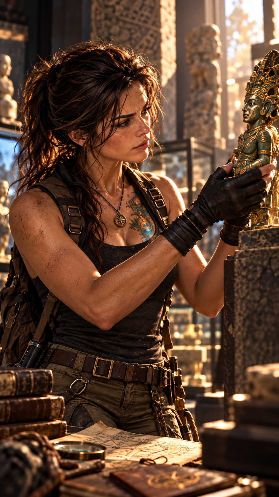
Max et Peter sont presque toujours rejoints par leur amie américaine, Root Tempass.
Ce soir-là, Max, Peter et Root dînent ensemble.
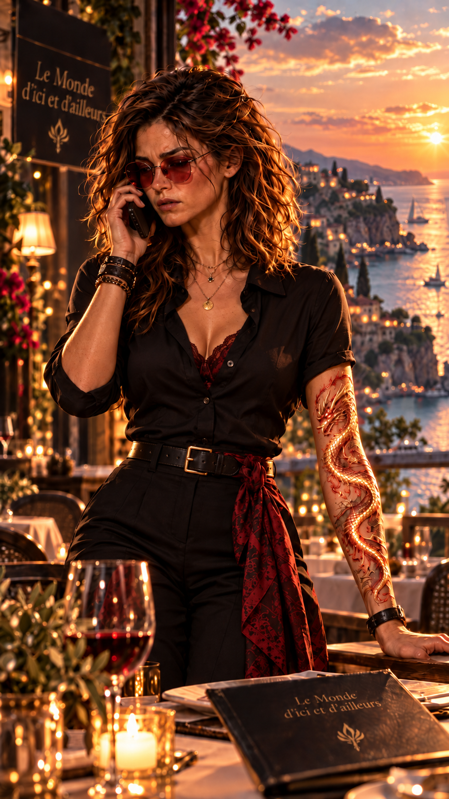
Hope, la propriétaire du restaurant, reçoit un appel téléphonique.
Son frère aîné, qui vit au Mexique, vient de mourir.
Il a été assassiné.
Étrangement, Hope ne paraît ni surprise ni en colère.
Elle devient simplement pensive.
— Hope part au Mexique.
— Pour tout vous dire, mon frère a été tué par un cartel.
— Dès le début du mois prochain, je serai moi aussi au Mexique.
— Décidément… on va tous finir par se retrouver au Mexique.
Max, Peter et Root se lèvent.
— Always together, stronger.
Toujours plus forts ensemble.

Peu à peu, plusieurs trajectoires commencent à converger vers le même endroit.
Le Mexique.
Un peu plus tard dans la matinée, Root prend la route de l’aéroport.
Mais quelque chose ne va pas.
Elle ne cesse de penser à Hope.
Elle a la sensation que son amie ne lui a pas tout dit.
Cette impression devient trop forte.
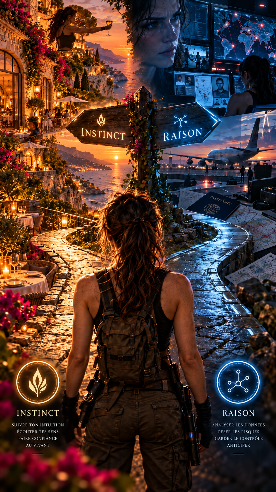
Quelque chose te dit que Hope ne lui a pas tout révélé.
Que ferais-tu ?
Root fait demi-tour.
Lorsqu’elle arrive au restaurant, elle n’a même pas besoin de demander où Hope se trouve.
Instinctivement, elle se dirige vers le rocher où Hope semble méditer face à la mer.
— Tu as compris que nous ne nous étions pas tout dit.
Hope sourit légèrement.
— Lorsque tu ressens profondément un doute, c’est souvent parce que quelque chose t’a échappé.
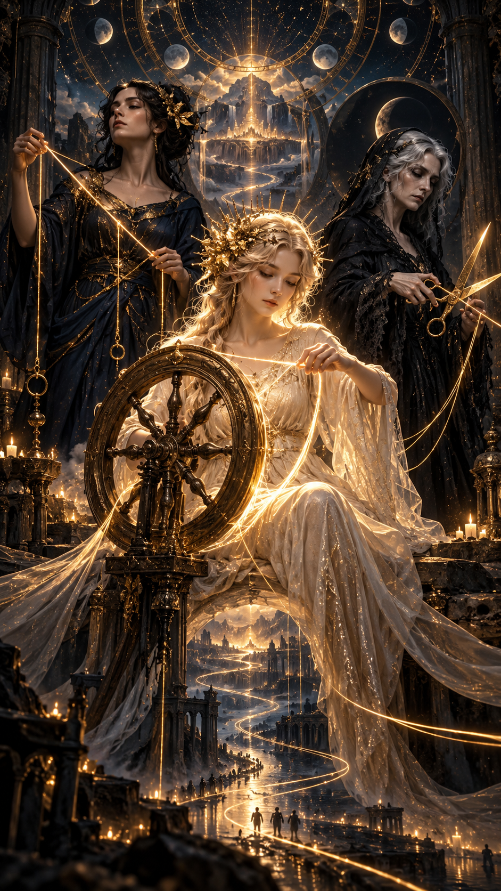
— Tu es une personne d’exception. De par tes ancêtres, un destin particulier t’attend.
— Là-bas, tu ne m’as jamais dit de quelle lignée je descendais.
Hope se tourne complètement vers elle.
— Tu es une Parque.
— Tu descends des trois sœurs fileuses : Nona, Décima et Morta.
Tu es le fil d’or de la lignée des mémoires du temps.
Ton métier, tes passions, tes choix…
Rien de tout cela n’est vraiment un hasard.
Root reste silencieuse.
Puis son visage s’illumine.
Je suis une Parque.
— Il faut que tu partes récupérer quelque chose.
— Quoi ?
— Une boîte.
La boîte.
Elle est unique, légendaire, extrêmement rare, antique…
et surtout, elle va nous être indispensable.
Root sourit.
— La boîte de Pandore.
DESTINATION
VIETNAM Grotte de Hang Son DoongRoot ouvre l’enveloppe.
— L’Asie…
La grotte de Hang Son Doong.
— Tu me gâtes. Je ne te décevrai pas.
— Tu risques de ne pas être la seule à la chercher.
— Le Fantôme de l’Ombre.
Elle appartient à l’Ordre des Gardiens Noirs.
Elle va très certainement te surveiller et tenter de récupérer la boîte de Pandore.
— Qui est-elle ?
— L’élite de la Ligue des Assassins.
Ne fais confiance à personne.
Et encore moins à une femme.
L’agent Lucy Adverse analyse, avec l’aide d’IA2 — une intelligence artificielle autonome dont elle est l’administratrice — les liens susceptibles de relier plusieurs affaires criminelles.
Un détail en particulier l’interpelle.
Un symbole.
Toujours le même.
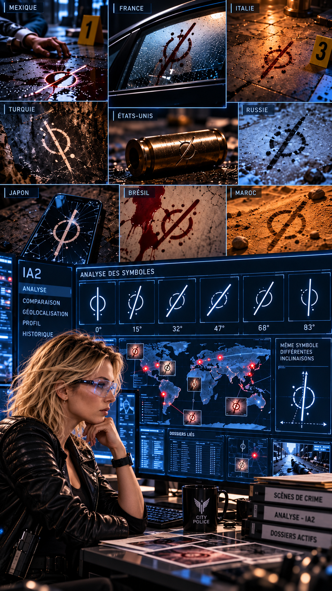
Le symbole n’a jamais exactement la même inclinaison.
Il est parfaitement identique d’une victime à l’autre, mais pivote légèrement de quelques degrés.
Comme l’aiguille d’une montre.
Ou celle d’une boussole.
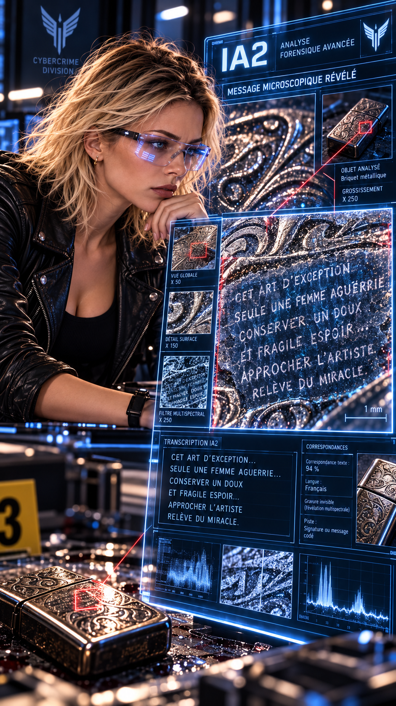
À cet instant, Lucy comprend.
Elle ne recherche pas un tueur en série.
Elle recherche une tueuse à gages.
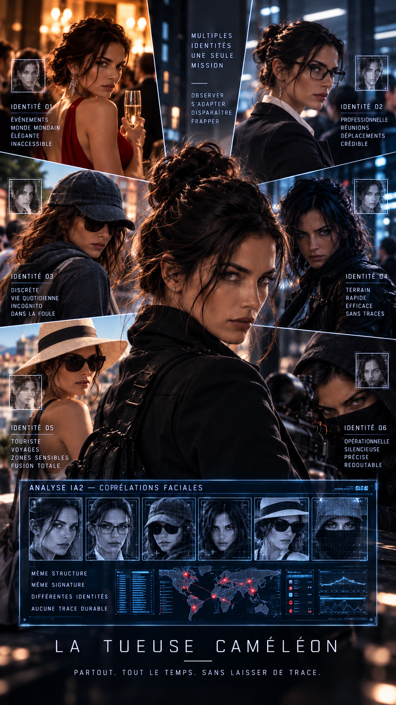
Une femme intelligente.
Méthodique.
Et surtout, elle joue avec ceux qui la poursuivent.
Cette découverte change tout.
Lucy décide de la surnommer :
La Tueuse Caméléon.
Lucy décide d’étendre ses recherches aux affaires similaires partout dans le monde.
La réponse d’IA2 arrive rapidement.
Elle frappe sur plusieurs continents.
Partout.
Pour avancer, Lucy décide de faire appel à une vieille connaissance.
Clive Lynx.
Un gentleman cambrioleur.
Audacieux, prévoyant, doté d’une mémoire photographique impressionnante.
Les journaux l’ont surnommé :
Le Magicien.
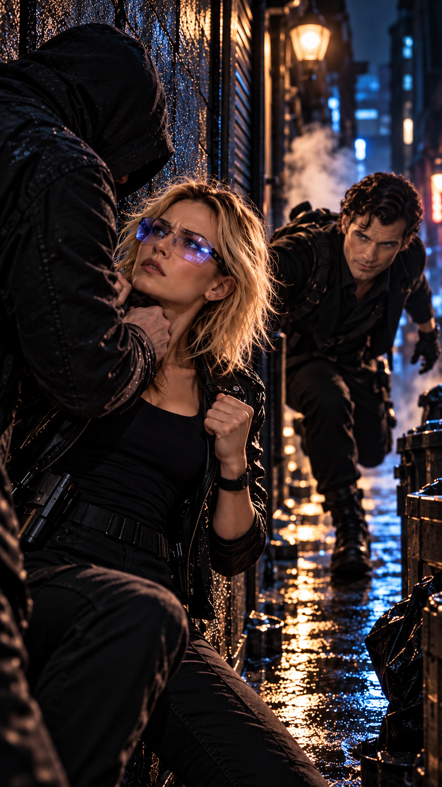
Ils se sont rencontrés peu de temps après l’arrivée de Lucy à la division.
C’était un dimanche, au lever du jour.
Après une longue poursuite, Lucy avait coincé un individu dangereux dans une petite ruelle sombre.
Mais l’homme lui avait arraché son arme de service.
Et s’apprêtait à lui tirer une balle entre les deux yeux.
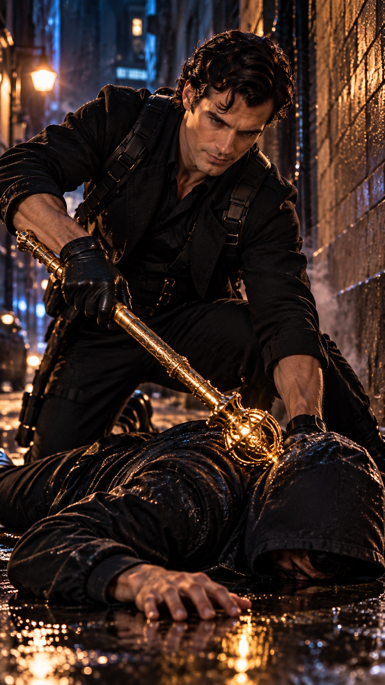
Clive avait surgi de nulle part.
Il avait assommé l’agresseur avec un sceptre en or massif incrusté de pierres précieuses.
— Une vie sauvée contre un secret bien gardé.
— C’est un marché respectable, vous ne trouvez pas ?
De discussion en discussion, ils étaient devenus de véritables acolytes.
Ils se retrouvaient régulièrement au French Bar.
Peu à peu, il était devenu leur quartier général officieux.
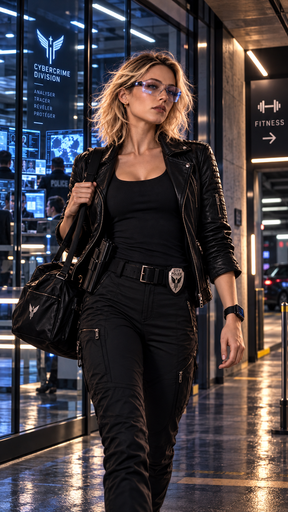
À la fin de sa journée de travail, comme à son habitude, Lucy part faire du sport.
La salle de fitness lui permet de relâcher la pression.
Root Tempass fréquente la même salle.
À la fin d’un cours de spinning, Root rejoint le parking souterrain.
Trois hommes l’attendent.
Ils l’agressent.
Lucy aperçoit la scène.
Elle se précipite immédiatement.
Mais lorsqu’elle arrive, Root a déjà mis deux hommes hors d’état de nuire.
Ensemble, Lucy et Root neutralisent le troisième.
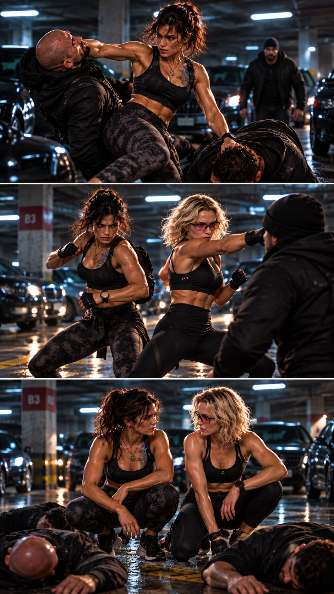
— Merci. C’était risqué de votre part, mais très aimable d’être intervenue.
— Je n’ai pas fait grand-chose.
Et j’ai comme l’impression que vous vous en seriez très bien sortie toute seule.
— Vous travaillez dans la police.
Lucy ne dit rien.
Root poursuit :
— Plus précisément… dans la cybercriminalité.
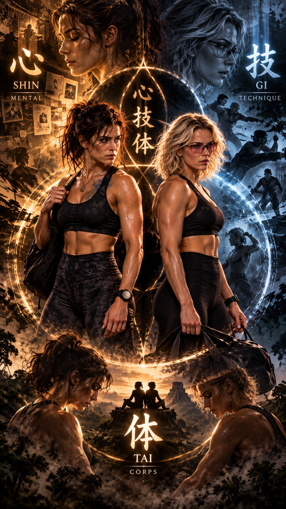
Root observe Lucy.
— La théorie et la pratique ne suffisent pas toujours.
Le combat peut devenir un art.
Un état d’être.
Shin — Gi — Tai.
L’union du mental, de la technique et du corps.
Root et Lucy passent une excellente soirée.
Elles apprennent à mieux se connaître et, curieusement, une confiance presque immédiate s’installe entre elles.
Comme si elles se connaissaient depuis toujours.
Root explique que connaître les causes et leurs effets permet parfois d’anticiper certaines conséquences.
Et donc, quelquefois, de modifier le futur.
Pas en le contrôlant entièrement.
Mais en intervenant au bon moment, au bon endroit et auprès de la bonne personne.
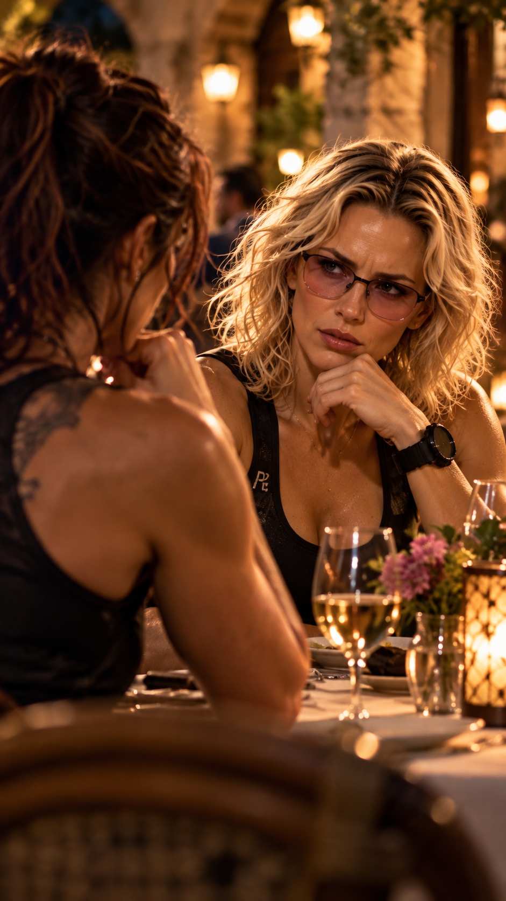
Lucy est fascinée.
Impressionnée.
Mais progressivement, une légère méfiance apparaît également en elle.
Sans même le savoir, Root vient d’attiser la curiosité professionnelle de Lucy.
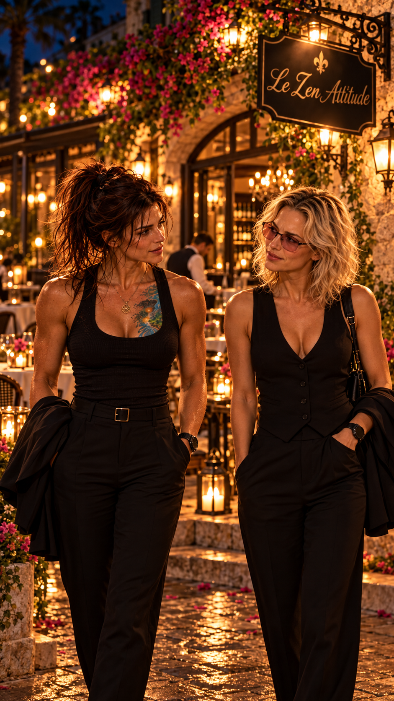
Les heures passent sans qu’aucune des deux ne s’en aperçoive.
Jusqu’au moment où un serveur s’approche de leur table.
— Mesdames, je suis désolé, mais nous allons devoir fermer.
Dehors, Root réalise quelque chose d’étrange.
Avec Lucy, elle a complètement perdu la notion du temps.
Et presque celle de l’espace.
Une Parque désorientée dans le temps et l’espace.
Au dîner, Betty annonce à Anna que le restaurant français où elles ont déjeuné a brûlé mardi matin.
Le chef et le propriétaire sont morts.
Anna est à la fois triste et furieuse.
— Il faut l’arrêter. On doit faire quelque chose.
— Les hommes comme Élie sont un peu comme l’Hydre de Lerne.
Tu coupes une tête, deux autres repoussent.
Le vrai problème, c’est tout ce qu’il représente : ce système, cet engrenage de trafic, de violence et de peur.
Anna reste silencieuse.
Puis elle sourit légèrement.
— C’est aussi pour cette raison que je fais des études de journalisme.
Je veux montrer au monde ce qu’il ne voit pas.
Maître Lee est le maître des Sentinelles de la Lumière et le gardien de la Source de Vie ainsi que du Temple du Cercle.
C’est lui qui découvrit Hope lorsqu’elle avait douze ans.
Elle était l’unique survivante du crash d’un A380.
Pour Lee, c’était un signe.
Hope n’était pas une enfant comme les autres.
Maître Lee décida de lui enseigner la maîtrise d’elle-même, la survie dans les conditions les plus extrêmes et tout ce qui pouvait lui permettre d’acquérir un corps sain et un esprit parfaitement maîtrisé.
Hope franchit avec une facilité déconcertante chacune des initiations de l’Ordre des Sentinelles de la Lumière.
Puis vint l’épreuve suprême.
La Porte de la Source de Vie.
Dans la nuit de mardi, Hope avait prévenu Maître Lee de la mort de son frère.
Un long silence avait suivi.
— Nous l’attendions depuis longtemps.
— Le signe ?
— Peut-être.
Un événement isolé n’est parfois qu’un événement.
Mais lorsque plusieurs pièces commencent à bouger en même temps, il faut apprendre à regarder l’échiquier dans son ensemble.
— Ta destinée est en marche.
— Elle l’a toujours été.
— Oui. Mais jusqu’à présent, tu pouvais encore choisir d’ignorer certains chemins.
Ce temps est terminé.
Maître Lee reprend :
— La jeune Puissante existe.
Hope relève immédiatement les yeux.
— Tu en es certain ?
— Presque.
— Où est-elle ?
— Au Mexique.
Elle doit avoir environ dix-neuf ans aujourd’hui.
— Comment peux-tu le savoir ?
— À cause d’une fiole.
Hope comprend presque immédiatement.
— Root.
Maître Lee continue :
— Il existe une autre personne que tu risques de croiser.
Le sourire de Hope disparaît.
Elle a déjà compris.
— Amy.
Lee acquiesce.
— Elle est donc toujours en vie.
— Oui.
La petite fille que tu as connue existe peut-être encore quelque part.
Mais celle que tu rencontreras aujourd’hui porte un autre nom.
Le Fantôme de l’Ombre.
Lee reprend finalement :
— Va au Mexique.
— Trouve la jeune Puissante.
— Protège-la.
— Rassemble ceux que le destin mettra sur ton chemin.
Puis son visage redevient grave.
— Beaucoup de personnes vont bientôt croire que tu es la seule capable de sauver le monde.
Il marque une pause.
— Ne commets jamais l’erreur de les croire.
Hope le fixe.
Lee conclut :
— Tu n’y arriveras pas seule.
Et c’est précisément pour cela que le destin est en train de les rassembler autour de toi.